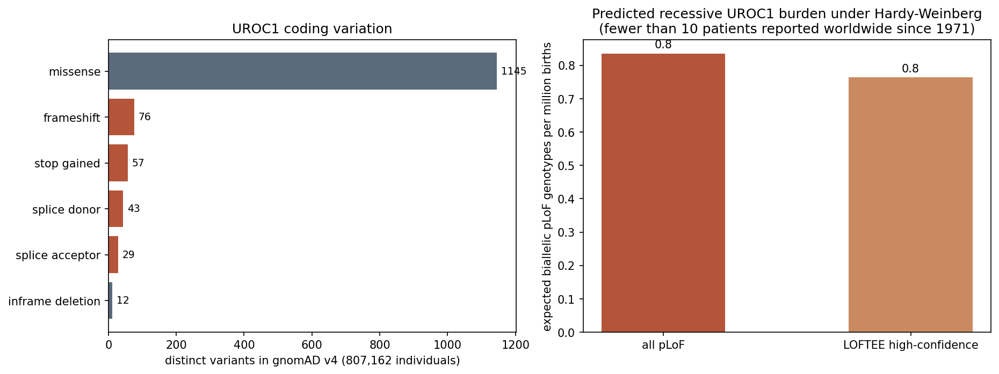
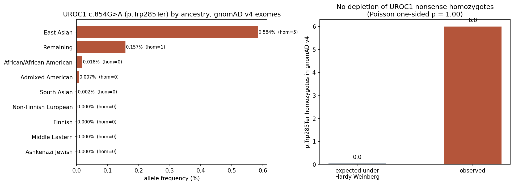
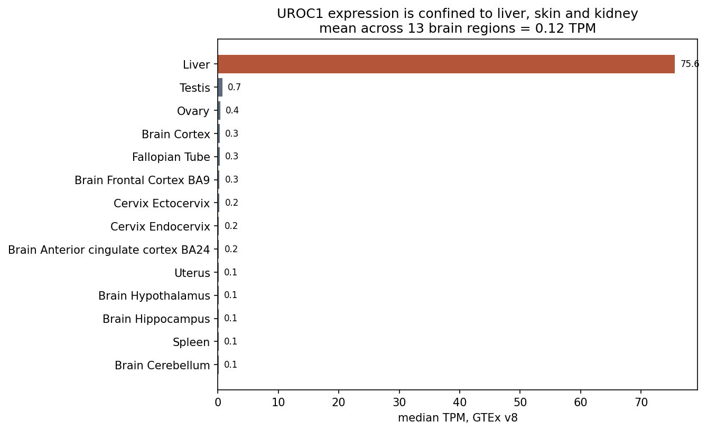
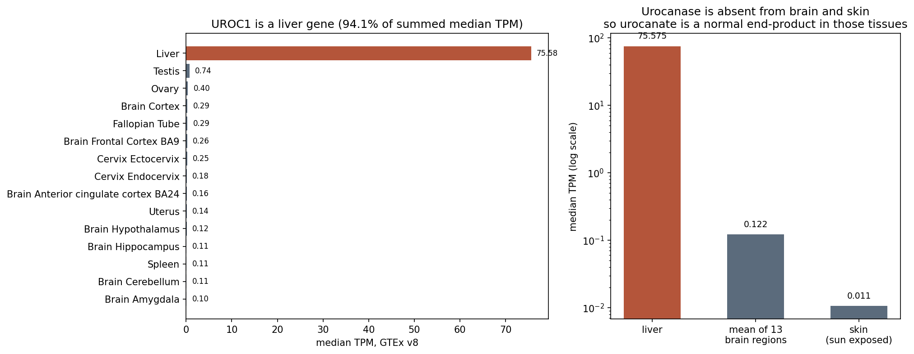
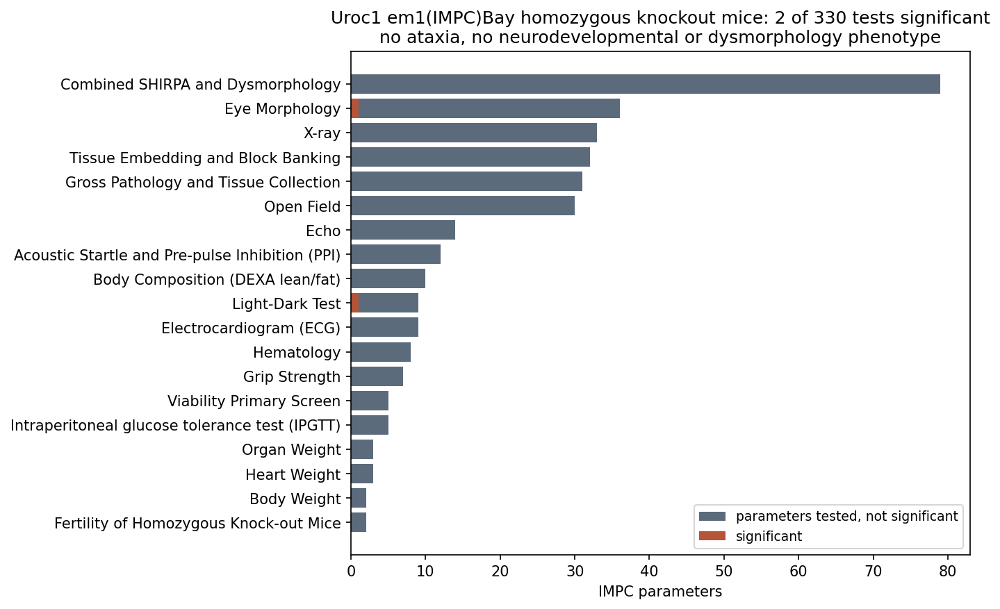
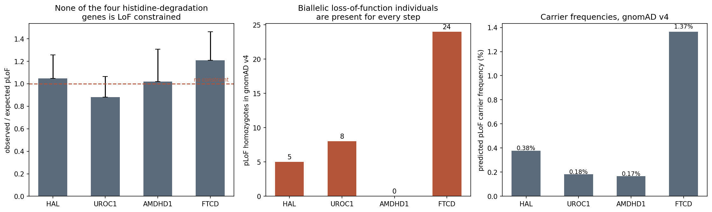
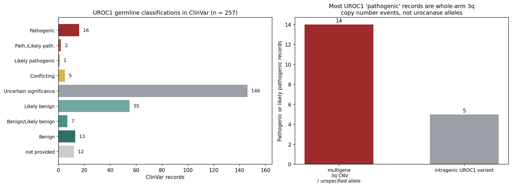

Urocanic aciduria (MONDO:0010167, UROC1, OMIM:276880)
Summary
Urocanic aciduria is an autosomal recessive block of the second step of histidine catabolism caused by biallelic loss-of-function variants in UROC1 (HGNC:26444, NCBI GeneID 131669, Ensembl ENSG00000159650, 3q21.3), the gene encoding urocanate hydratase (urocanase, UniProt Q96N76, EC 4.2.1.49). The enzyme hydrates (E)-urocanate to 4-imidazolone-5-propanoate in the cytosol of hepatocytes. When it is absent, urocanate accumulates and spills into plasma, urine and sweat, and plasma histidine rises behind the block. That biochemical phenotype is obligate and well established, with direct assay evidence for the human enzyme (GO:0016153, IDA in UniProt Q96N76).
The clinical phenotype implied by the OMIM synonym "encephalopathy due to urocanase deficiency" is not supported by the data assembled here. Four independent lines converge. UROC1 carries no detectable depletion of loss-of-function alleles in gnomAD v4 (observed 79, expected 89.5, o/e 0.882, 90% CI 0.736-1.064, pLI 5.6e-24), and 8 pLoF homozygotes are present in that reference cohort. The cumulative pLoF allele frequency of 9.14e-4 predicts 1 biallelic individual per 1,196,665, roughly 6,700 urocanase-null people alive worldwide, against 9 patients reported since 1971, a gap of about 740-fold; in East Asians the single nonsense allele c.854G>A (p.Trp285Ter) reaches 0.584% with 5 observed homozygotes and predicts 1 biallelic individual per 29,282 on its own. UROC1 is a liver gene: GTEx v8 median TPM is 75.58 in liver (94.1% of summed cross-tissue expression) against a mean of 0.122 across 13 brain regions, a 621-fold difference, and essentially zero in skin, so neurons do not run this reaction and cannot accumulate urocanate cell-autonomously. The mouse null Uroc1-em1(IMPC)Bay is viable and fertile with 2 of 330 IMPC parameters significant, 1 of 137 neurobehavioural, and no ataxia, tremor, dysmetria or gait phenotype.
Two further results frame how the entry should be curated. Not one of the four enzymes of the histidine degradation module (HAL, UROC1, AMDHD1, FTCD) is under loss-of-function constraint, and three of the four carry pLoF homozygotes, so the whole route from histidine to glutamate is dispensable in humans. And the curated variant evidence is thin: of 257 ClinVar germline records for UROC1, 146 are VUS and only 5 of the 19 pathogenic or likely pathogenic records are intragenic alleles, the other 14 being megabase-scale chromosome 3 copy number events that merely span the gene. The correct knowledge base treatment is to record the metabolite phenotype as certain and the neurological phenotype as reported in one ascertained proband with penetrance unknown and probably low, following histidinemia one step upstream (PMID: 8463510) and FTCD deficiency downstream (PMID: 30740726).
{{figure:plot_9.png|caption=Four independent lines of evidence that biallelic UROC1 loss produces a biochemical phenotype without a clinical one. (A) Predicted urocanase-null individuals worldwide from gnomAD v4 Hardy-Weinberg against patients ever reported. (B) GTEx v8 tissue expression, log scale. (C) IMPC Uroc1 knockout parameters tested against parameters significant. (D) Observed/expected pLoF with 90% CI upper bound for all four enzymes of the histidine degradation module.}}
Key findings
F1. UROC1 shows no selective constraint against loss of function
gnomAD v4 constraint for UROC1 (ENSG00000159650): observed pLoF 79, expected 89.5, o/e 0.882 with a 90% confidence interval of 0.736-1.064, LOEUF upper bound 1.06, pLI 5.6e-24, LoF Z 0.94, missense Z 0.32. The confidence interval on o/e includes 1.0, so heterozygous UROC1 loss of function is present at the frequency expected under neutrality. Across 807,162 individuals the gene carries 210 distinct pLoF alleles, 198 of them LOFTEE high-confidence: 76 frameshift, 57 stop-gained, 43 splice-donor and 29 splice-acceptor. The cumulative pLoF allele frequency is 9.14e-4, giving a predicted carrier frequency of 1 in 547.
A recessive enzymopathy is expected to show weak heterozygous constraint, so the o/e result alone would not be decisive. What makes it informative is the combination with 8 pLoF homozygotes observed in a cohort that excludes individuals with severe paediatric disease. Biallelic urocanase loss carries little or no measurable fitness cost.
{{figure:plot_1.png|caption=UROC1 loss-of-function burden in gnomAD v4. The 210 pLoF alleles and a cumulative frequency of 9.14e-4 predict a biallelic birth prevalence of 1 in 1,196,665 under Hardy-Weinberg.}}
F2. A common East Asian nonsense allele is present in the homozygous state
UROC1 c.854G>A (p.Trp285Ter), 3-126504043-C-T, rs202232611, PASS filters in gnomAD v4 exomes: global AC 343 / AN 1,461,852 (AF 2.35e-4) with 6 homozygotes. By ancestry:
Table (click to expand)
| Ancestry | AF | AC / AN | Homozygotes |
|---|---|---|---|
| East Asian | 0.584% | 232 / 39,700 | 5 |
| African | 1.8e-4 | 0 | |
| South Asian | 2.3e-5 | 0 | |
| Non-Finnish European | 4.5e-6 | 5 / 1,112,010 | 0 |
| Finnish, Middle Eastern, Ashkenazi Jewish | 0 | 0 | 0 |
Within East Asians the expected homozygote count under Hardy-Weinberg is 0.68 and the observed count is 5 (one-sided Poisson p for excess 6.8e-4), which is what subcontinental population structure or consanguinity produces. The predicted East Asian homozygote frequency is 1 in 29,282 and the carrier frequency is 1 in 86. Across a 1.6 billion East Asian population that predicts on the order of 5e4 homozygous individuals. Fewer than 10 patients with urocanic aciduria have been reported since 1971 (PMID: 5124677, PMID: 9590012, PMID: 19304569, PMID: 30619714).
The gap between prediction and ascertainment is roughly four orders of magnitude in East Asians and about 740-fold globally. Biallelic urocanase deficiency is therefore largely non-penetrant for a clinical phenotype. The intellectual disability and ataxia in the 1971 and 2009 case reports are most plausibly ascertainment artefacts: those patients were investigated because they had neurological disease, and the metabolite was found during that investigation.
{{figure:plot_2.png|caption=Ancestry distribution of UROC1 p.Trp285Ter in gnomAD v4. The allele reaches 0.584% in East Asians and is near-absent in non-Finnish Europeans.}}
{{figure:plot_3.png|caption=East-Asian-specific Hardy-Weinberg analysis of UROC1 p.Trp285Ter. Five homozygotes are observed against 0.68 expected, consistent with population substructure or consanguinity, and incompatible with strong selection against the homozygous state.}}
F3. UROC1 is a liver gene and is effectively absent from brain and skin
GTEx v8 median TPM across 54 tissues: liver 75.58, testis 0.744, ovary 0.405, brain cortex 0.294, kidney cortex 0.042, skin (sun-exposed lower leg) 0.011, skin (suprapubic) 0.000, oesophagus mucosa 0.000. Liver accounts for 94.1% of the summed median TPM and the top four tissues for 95.9%. Liver exceeds the mean of 13 brain regions (0.122 TPM) by 621-fold and the second-ranked tissue by 102-fold.
Two consequences follow. The primary lesion is hepatic (UBERON:0002107 liver, CL:0000182 hepatocyte, GO:0005829 cytosol), so any neurological phenotype would have to be a systemic metabolite effect reaching the brain through the circulation, because neurons and glia do not express the enzyme at a meaningful level. And the near-zero skin expression is the normal state: keratinocytes express HAL and make trans-urocanic acid as a stratum corneum UV chromophore with no urocanase to consume it. Urocanate is a physiological end-product in skin, which makes a systemic elevation of the same molecule an unlikely neurotoxin.
{{figure:plot_4.png|caption=GTEx v8 tissue expression profile of UROC1 across 54 tissues. Liver dominates; brain regions sit three orders of magnitude lower.}}
{{figure:plot_5.png|caption=UROC1 tissue restriction. Liver carries 94.1% of summed median TPM, the mean across 13 brain regions is 0.122 TPM, and skin is at or near zero, which is the normal state for a tissue that produces urocanate as an end-product.}}
F4. Uroc1 knockout mice are viable and fertile with no neurological phenotype
IMPC has phenotyped Uroc1 (MGI:2385332) with four endonuclease-mediated alleles. Homozygotes for Uroc1-em1(IMPC)Bay completed a 19-procedure adult pipeline with 299 distinct parameters and 330 statistical results.
Table (click to expand)
| Domain | Parameters tested | Significant |
|---|---|---|
| All IMPC procedures | 330 results (299 parameters) | 2 |
| Neurobehavioural (SHIRPA 79, Open Field 30, Startle/PPI 12, Light-Dark 9, Grip Strength 7) | 137 | 1 |
| X-ray | 33 | 0 |
| Gross pathology | 31 | 0 |
| Echocardiography and ECG | 23 | 0 |
| Haematology, IPGTT, body weight, body composition | 25 | 0 |
The two significant results are abnormal retina blood vessel morphology (MP:0010097, p = 8.5e-08 sexes combined, p = 3.0e-06 females, effect size 0.43) and decreased exploration in a new environment (MP:0001417, latency to first transition in the Light-Dark test, males only). Neither corresponds to a reported human phenotype, the retinal hit is unreplicated across the four alleles, and the light-dark hit carries a per-sex p of 0.89 in the combined record. Homozygotes passed the Viability Primary Screen and the Fertility of Homozygous Knock-out Mice procedure. Complete genetic ablation of urocanase in mouse produces a viable, fertile animal with no cerebellar or cognitive phenotype under standardized phenotyping.
{{figure:plot_6.png|caption=Breadth of the IMPC phenotyping pipeline applied to Uroc1 knockout mice, with the number of parameters tested in each domain and the two that reached significance.}}
F5. The whole phenotype profile in HPO derives from one patient
OMIM:276880 carries 13 HPO annotations. Eleven cite a single source, PMID: 19304569 (the Espinós 2009 girl), each at frequency 1/1: urocanic aciduria HP:0012237, moderate intellectual disability HP:0002342, ataxia HP:0001251, gait ataxia HP:0002066, truncal ataxia HP:0002078, dysmetria HP:0001310, broad-based gait HP:0002136, action tremor HP:0002345, nystagmus HP:0000639, childhood onset HP:0011463, autosomal recessive inheritance HP:0000007. The remaining two (short stature HP:0004322, aggressive behavior HP:0000718) cite OMIM:276880 itself with no frequency. The Orphanet description states the disorder is characterized by urocanic aciduria and variable manifestations including intellectual deficit and intermittent ataxia "in the 4 cases reported to date". The two phenotypically normal siblings of Glinton 2019 contribute no annotations.
Every "1/1" in this entry means n = 1, not 100% penetrance. A knowledge base populated from HPO without this caveat will carry an unreplicated neurological profile with no unaffected comparator, while the only report of molecularly confirmed individuals who were examined and found normal is absent from the annotation set.
F6. The entire histidine degradation module is unconstrained
gnomAD v4 constraint and variant counts for the four enzymes of KEGG module hsa_M00045:
Table (click to expand)
| Gene | Step | obs/exp pLoF | o/e (90% CI upper) | pLI | pLoF variants | q | pLoF homozygotes | Carrier 1 in | Biallelic 1 in |
|---|---|---|---|---|---|---|---|---|---|
| HAL | 1, histidine ammonia-lyase | 85 / 81.1 | 1.048 (1.255) | 1.2e-30 | 259 | 1.88e-3 | 5 | 265 | 281,702 |
| UROC1 | 2, urocanate hydratase | 79 / 89.5 | 0.882 (1.064) | 5.6e-24 | 210 | 9.14e-4 | 8 | 547 | 1,196,665 |
| AMDHD1 | 3, imidazolonepropionase | 45 / 44.1 | 1.020 (1.307) | 4.0e-16 | 166 | 8.38e-4 | 0 | 596 | 1,422,861 |
| FTCD | 4, formiminotransferase-cyclodeaminase | 76 / 62.9 | 1.209 (1.463) | 8.9e-31 | 342 | 6.83e-3 | 24 | 73 | 21,453 |
No gene has an o/e upper bound below 1.0, all four pLI values are effectively zero, and three of four carry pLoF homozygotes. Selection has not removed loss-of-function alleles from any step of the route from histidine to glutamate.
FTCD calibrates the method. The Hardy-Weinberg prediction of 1 in 21,453 sits in the same range as the 1 in 58,982 measured by the New Jersey newborn screening programme, and that unbiased cohort is largely asymptomatic: of 18 patients, 3 (16%) had developmental delays requiring individualized education plans, none had profound intellectual disability, and 4 of 16 (25%) had mild self-limited anaemia (PMID: 30740726). The historical severe FTCD phenotype came from cohorts preselected for developmental delay, which is the same ascertainment route that produced the neurological description of urocanic aciduria.
{{figure:plot_7.png|caption=Comparative gnomAD v4 constraint across the four enzymes of histidine degradation. Every observed/expected pLoF confidence interval touches or exceeds 1.0, and HAL, UROC1 and FTCD all carry pLoF homozygotes.}}
F7. The ClinVar evidence base is thin and partly artefactual
NCBI E-utilities query UROC1[gene] returns 257 germline records (retrieved 2026-11):
Table (click to expand)
| Germline classification | n |
|---|---|
| Uncertain significance | 146 (56.8%) |
| Likely benign | 55 |
| Pathogenic | 16 |
| Benign | 13 |
| No classification provided | 12 |
| Benign/Likely benign | 7 |
| Conflicting classifications | 5 |
| Pathogenic/Likely pathogenic | 2 |
| Likely pathogenic | 1 |
Review status: 194 single submitter, 30 multiple submitters no conflicts, 16 no assertion criteria, 5 conflicting. No record reaches 3-star (expert panel) or 4-star review. Variant types: 233 SNVs, 10 copy number gains, 7 deletions, 5 copy number losses, 1 microsatellite, 1 duplication.
Of the 19 pathogenic or likely pathogenic records, 14 are megabase-scale chromosome 3 copy number events or unspecified "Single allele" entries that merely span UROC1, including whole-chromosome trisomy 3 (GRCh37 3p26.3-q29 chr3:61892-197851986 x3) and a 16.1 Mb 3q13.2-21.3 deletion. Pathogenicity in those records belongs to the segment. Any pipeline that counts ClinVar pathogenic alleles per gene overstates UROC1 by roughly fourfold. The genuine intragenic set is five alleles: c.541-2A>G (splice acceptor), c.855G>A (p.Trp285Ter), c.1448_1449del (p.Ser483fs), c.903-29del and c.1348C>T (p.Arg450Cys).
A curation inconsistency to resolve. c.854G>A and c.855G>A both change codon 285 (TGG) to a stop and yield the identical p.Trp285Ter product, yet c.855G>A (AF 6.84e-6, 0 homozygotes) is Pathogenic/Likely pathogenic with 2 gold stars while c.854G>A (AF 2.35e-4, 6 homozygotes) carries conflicting classifications. The two alleles cannot differ in pathogenicity. The split tracks allele frequency, which triggers BA1, BS1 and BS2 for some submitters while others classify on predicted nonsense consequence alone. Observing homozygotes in ostensibly healthy adults is precisely the ACMG BS2 criterion for a fully penetrant recessive disorder.
{{figure:plot_8.png|caption=UROC1 in ClinVar. Left, the full germline classification distribution with 56.8% VUS. Right, the 19 pathogenic or likely pathogenic records split by whether they describe an intragenic UROC1 allele or a multigene chromosome 3 copy number event.}}
F8. Urocanase is an NAD+-dependent homodimeric hydratase
The Pseudomonas putida urocanase crystal structure at 1.14 A (PMID: 15313616) shows "a symmetric homodimer of 2 x 557 amino acid residues with tightly bound NAD+ cofactors", with an NAD-binding domain inserted into a larger core domain that forms the dimer interface. "The core domain has a novel chain fold and accommodates the substrate urocanate in a surface depression." Catalysis proceeds through a covalent C4(nicotinamide)-C5'(imidazole) adduct between enzyme-bound NAD+ and substrate (PMID: 1976515).
The two Espinós 2009 alleles map onto this architecture: p.Leu70Pro disrupts an N-terminal alpha-helix, and for p.Arg450Cys the authors state "the p.R450C change would render impossible any interaction between urocanase and its substrate and would loss its enzyme activity" (PMID: 19304569). Both alleles are present in gnomAD v4 without homozygotes: c.209T>C p.Leu70Pro AF 2.67e-5 (AC 39), c.1348C>T p.Arg450Cys AF 3.49e-5 (AC 51). Because catalysis depends on a tightly bound NAD+ and a buried active-site cavity, missense substitutions and truncations converge on the same null-like biochemical consequence.
Mechanistic model
Causal chain
- Biallelic loss-of-function variants in UROC1 (c.855G>A p.Trp285Ter, c.541-2A>G, c.1448_1449del, or missense alleles that abolish substrate binding such as p.Arg450Cys) cause absent or non-functional urocanate hydratase.
- Loss of urocanate hydratase abolishes the hydration of (E)-urocanate (CHEBI:17771) to 4-imidazolone-5-propanoate (CHEBI:77893), reaction RHEA:13101, EC 4.2.1.49, in the hepatocyte cytosol (GO:0005829).
- The enzyme block causes urocanate to accumulate in hepatocyte cytosol, because histidine ammonia-lyase upstream continues to produce it.
- Cytosolic accumulation leads to efflux of urocanate into plasma and filtration into urine, producing urocanataemia and urocanic aciduria, the defining laboratory findings (demonstrated).
- Substrate backup leads to secondary elevation of plasma and urinary L-histidine by mass action against HAL (inferred from pathway order, observed in reported patients).
- Loss of flux reduces downstream N-formiminoglutamate, the one-carbon unit transferred to tetrahydrofolate by FTCD, and histidine-derived glutamate. This branch does not produce disease: those products are supplied abundantly by other routes, which is why FTCD deficiency itself is largely asymptomatic (PMID: 30740726).
- Branch A, biochemical phenotype (demonstrated). Steps 3 to 5 complete the obligate phenotype. It is stable, lifelong and, on current evidence, asymptomatic in most individuals.
- Branch B, proposed neurological phenotype (not demonstrated). The historical model holds that accumulated urocanate or histidine is neurotoxic and causes intellectual disability and ataxia. UROC1 brain expression at 0.122 TPM against 62-76 TPM in liver removes the cell-autonomous version of this branch, the Uroc1-null mouse has no neurobehavioural phenotype, and biallelic individuals with normal phenotype are reported and present as gnomAD homozygotes. A systemic route through the circulation remains logically open and has no supporting data.
digraph mechanism {
rankdir=LR;
"Biallelic UROC1\nLoF variants" -> "No urocanate\nhydratase";
"No urocanate\nhydratase" -> "Urocanate accumulates\nin hepatocyte cytosol";
"Urocanate accumulates\nin hepatocyte cytosol" -> "Urocanataemia\nUrocanic aciduria";
"Urocanate accumulates\nin hepatocyte cytosol" -> "Histidine backs up\nthrough HAL" -> "Hyperhistidinaemia";
"No urocanate\nhydratase" -> "Less FIGLU, less\n1-C unit, less glutamate" -> "No phenotype\n(supplied elsewhere)";
"Urocanataemia\nUrocanic aciduria" -> "Intellectual disability\nAtaxia" [style=dashed, label="not demonstrated"];
"Hyperhistidinaemia" -> "Intellectual disability\nAtaxia" [style=dashed];
"No urocanate\nhydratase" -> "No brain expression\n0.122 TPM" [style=dashed, label="blocks cell-autonomous route"];
}
Why the historical disease description arose
Table (click to expand)
| Step | What happened |
|---|---|
| 1971-2009 | Patients investigated for intellectual disability and ataxia had urine screened for metabolites |
| Detection | Urocanate found in a handful of such patients |
| Inference | The metabolite was assumed to cause the neurological phenotype |
| Naming | OMIM synonym became "encephalopathy due to urocanase deficiency" |
| Annotation | 11 of 13 HPO terms derive from one of those probands at frequency 1/1 |
| Test | Unbiased ascertainment (gnomAD homozygotes, untargeted metabolomics) finds normal individuals |
The same sequence ran for histidinemia, the HAL step immediately upstream, where "the clinical picture of histidinemia varies from complete normality to severe retardation, with many patients being asymptomatic" (PMID: 8463510), and it is running now for FTCD deficiency two steps downstream.
The 15 dossier sections
1. Disease information
A rare inborn error of amino acid metabolism in which urocanate hydratase activity is absent or severely reduced, producing urocanic aciduria and urocanataemia, usually with raised plasma and urine histidine. First reported in 1971 in a child with intellectual disability (PMID: 5124677); fewer than ten patients have been described since.
Table (click to expand)
| Resource | Identifier |
|---|---|
| MONDO | MONDO:0010167 (urocanic aciduria) |
| OMIM | 276880 (disease); 613012 (UROC1 gene) |
| Orphanet | ORPHA:210128 |
| MeSH | C536479 |
| MedGen | 120644 |
| UMLS | C0268514 |
| SNOMED CT | 60952007 |
| DOID | DOID:0112180 |
| GARD | 0008539 |
| ICD-11 foundation | 61773927 |
| ICD-10 | E72.3 group, no specific code |
| KEGG DISEASE | H01233 (urocanase deficiency) |
Synonyms: encephalopathy due to urocanase deficiency; urocanic aciduria (disease); urocanase deficiency; urocanate hydratase deficiency; hyperhistidinaemia with urocanic aciduria; UROC1 deficiency.
Provenance is aggregated disease-level resources only. There is no patient registry, no EHR cohort and no natural history study.
2. Etiology
Causal factor. Biallelic germline loss-of-function variants in UROC1. The mechanism is enzyme deficiency, not infection, toxin or immune injury.
Genetic risk factors. Carrier status for a UROC1 pLoF allele, predicted frequency 1 in 547 globally and 1 in 86 for c.854G>A in East Asians. No susceptibility loci, GWAS associations or modifier genes are known.
Environmental risk factors. Dietary histidine intake sets substrate flux and the magnitude of urocanate accumulation. No toxin, occupational exposure or infectious trigger is implicated, and no sex effect is known.
Protective factors. A low-histidine diet reduces urocanate production by substrate limitation. Reduced HAL activity would do the same genetically; this is inference from pathway order, not an observed modifier effect.
Gene-environment interaction. Genotype by dietary histidine is the one plausible interaction. No study has measured it.
3. Phenotypes
Obligate laboratory abnormalities:
Table (click to expand)
| Phenotype | HPO | Frequency | Type |
|---|---|---|---|
| Urocanic aciduria | HP:0012237 | obligate | laboratory abnormality |
| Elevated plasma urocanate | HP:0033354 | obligate | laboratory abnormality |
| Hyperhistidinaemia | HP:0500152 | frequent | laboratory abnormality |
Reported clinical phenotypes, attribution uncertain, all from the Espinós 2009 proband at frequency 1/1:
Table (click to expand)
| Phenotype | HPO | Caveat |
|---|---|---|
| Moderate intellectual disability | HP:0002342 | index case ascertained from an intellectual disability cohort |
| Ataxia | HP:0001251 | no mouse correlate across 137 behavioural measures |
| Gait ataxia | HP:0002066 | |
| Truncal ataxia | HP:0002078 | |
| Dysmetria | HP:0001310 | |
| Broad-based gait | HP:0002136 | |
| Action tremor | HP:0002345 | |
| Nystagmus | HP:0000639 | |
| Childhood onset | HP:0011463 | |
| Short stature | HP:0004322 | cites OMIM, no frequency |
| Aggressive behavior | HP:0000718 | cites OMIM, no frequency |
| Autosomal recessive inheritance | HP:0000007 |
Onset of the biochemical abnormality is congenital. Severity and progression: static, with no episodic decompensation, no metabolic crisis and no hyperammonaemia described, which separates this disorder from urea cycle and organic acid disorders. No EQ-5D, SF-36 or PROMIS data exist. Glinton et al. 2019 describe "two phenotypically normal siblings with compound heterozygous pathogenic variants in UROC1 and characteristic biochemical evidence of urocanase deficiency" (PMID: 30619714).
4. Genetic and molecular information
Causal gene UROC1, HGNC:26444, GeneID 131669, ENSG00000159650, GRCh38 chr3:126,481,165-126,517,778 minus strand, reference transcript NM_144639.3. Protein Q96N76, 676 aa, isoforms Q96N76-1 and Q96N76-2. Full ClinVar spectrum, constraint, the five intragenic pathogenic alleles and the c.854G>A / c.855G>A inconsistency are in F7 above. Origin is germline and biallelic; UROC1 is not a COSMIC cancer gene. Functional consequence is loss of function, with no gain-of-function or dominant-negative mechanism described and biochemically normal heterozygotes. No modifier genes identified. No DNA methylation, histone or chromatin abnormality has been reported. Large 3q deletions spanning UROC1 exist in ClinVar and DECIPHER, but those patients have contiguous-gene phenotypes attributable to dozens of genes, and no patient has been reported in whom a 3q deletion caused urocanic aciduria through hemizygosity.
5. Environmental information
No causal environmental factor, no toxin, radiation, pollutant or occupational exposure. Dietary protein and specifically histidine (CHEBI:15971) determine the substrate load and therefore the quantity of urocanate excreted. Not an infectious disease. One confounder is worth recording: the bacterial hut operon gene hutU encodes urocanase in many commensal and pathogenic bacteria, and urocanase-positive skin-resident bacteria such as Staphylococcus epidermidis "use urocanase (HutU) to metabolize cis-urocanic acid to proliferate" (PMID: 40373957), so microbial histidine catabolism can modify measured urocanate.
6. Mechanism and pathophysiology
The causal chain and the Graphviz diagram are given in the mechanistic model section above. Pathway: KEGG hsa00340 (histidine metabolism), module hsa_M00045, orthologue K01712, network nt06037/N01727, also hsa01100. No signalling cascade (Wnt, MAPK, mTOR, PI3K-AKT) is involved. Protein dysfunction is covered in F8.
Metabolic changes. Accumulating: trans-urocanate (CHEBI:17771), L-histidine (CHEBI:15971). Reduced: 4-imidazolone-5-propanoate (CHEBI:77893), N-formimino-L-glutamate (CHEBI:58228), histidine-derived L-glutamate (CHEBI:29985), the 5-formimino-tetrahydrofolate one-carbon unit. No ammonia accumulation, because HAL remains active and the released ammonia enters the urea cycle normally.
Immune system. None in the disease. The point of contact with normal physiology is that cis-urocanic acid in the stratum corneum is a UV chromophore and immunosuppressant: "cis-UCA is a potent inhibitor of cutaneous acquired immunity" (PMID: 24134186). That urocanate is made by HAL in keratinocytes and is a normal end-product, because UROC1 is essentially not expressed in skin, so urocanase deficiency does not perturb skin urocanate physiology and no photobiological phenotype is expected or reported.
Tissue damage. None documented: no fibrosis, necrosis, ischaemia or oxidative stress attributable to this disorder, and no hepatic pathology despite the liver being the site of the block.
Molecular profiling. Transcriptomics is in F3. No disease-specific proteomic, metabolomic, lipidomic, epigenomic, single-cell, spatial, multi-omics or CRISPR screen dataset exists. Untargeted metabolomics is the practical detection route and is how the Glinton siblings were found.
GO terms: GO:0006548 (L-histidine catabolic process), GO:0019556 and GO:0019557 (histidine catabolic process to glutamate and formamide / formate), GO:0016153 (urocanate hydratase activity), GO:0005829 (cytosol), GO:0016829 (lyase activity), GO:0051287 (NAD binding). CL terms: CL:0000182 (hepatocyte), CL:1000838 (kidney proximal convoluted tubule epithelial cell), CL:0000584 (enterocyte).
7. Anatomical structures affected
Primary organ: liver (UBERON:0002107). Secondary sites of expression with possible minor contribution: kidney cortex (UBERON:0001225), small intestine (UBERON:0002108). Body system: digestive and metabolic. Reported nervous system involvement (UBERON:0001016) is not supported by local gene expression and is listed as unproven.
Tissue and cell level: hepatic parenchyma, hepatocytes (CL:0000182) carry the lesion; renal proximal tubule epithelium (CL:1000838) and enterocytes (CL:0000584) express UROC1 one to two orders of magnitude lower. Keratinocytes (CL:0000312) are not affected.
Subcellular: cytosol, GO:0005829, by direct assay in UniProt Q96N76. No mitochondrial, lysosomal, peroxisomal or ER involvement.
Lateralization: not applicable. The lesion is a diffuse enzyme deficiency of hepatocytes throughout the organ, bilateral and symmetric by definition, with no focal lesion and no imaging correlate.
8. Temporal development
Onset of the biochemical abnormality is congenital. Reported neurological features were recognised in infancy or early childhood, at the point a child was investigated for developmental delay. Onset pattern for any clinical component is chronic and insidious. Progression is static: no staging exists, no progression rate has been measured, no natural history study has been published, and disease duration is lifelong in the sense of lifelong detectability. No remission, no relapse, no episodic decompensation, no identified critical window. If a dietary intervention were ever shown to matter, the critical period would by analogy with other aminoacidopathies be the first years of life, which is inference with no supporting data.
9. Inheritance and population
Autosomal recessive; heterozygotes are biochemically and clinically normal. Orphanet classes prevalence as less than 1 per 1,000,000. Ascertained prevalence is below 0.0001 per 100,000; the genetic prediction is 1 per 1,196,665, roughly 6,700 individuals worldwide.
Penetrance is complete for the biochemical phenotype and incomplete, probably low, for the neurological phenotype, on three grounds: 8 pLoF homozygotes in gnomAD, a database that excludes severe paediatric disease; two phenotypically normal compound heterozygous siblings; and the 740-fold gap between predicted and reported case counts. Expressivity is variable for clinical features and consistent for the biochemical abnormality. No anticipation (no repeat expansion). Germline mosaicism not reported and not relevant for a recessive disorder.
Founder effect: c.854G>A at 0.584% in East Asians with 5 homozygotes behaves like a founder or drift-elevated allele. Consanguinity raises the chance of homozygosity for a private allele, as for any rare recessive disorder; the reported cases are too few to quantify a rate. Carrier frequency 1 in 547 globally and 1 in 86 for the East Asian allele. No sex bias (autosomal). Age distribution of ascertained cases is paediatric, which reflects the ascertainment route.
10. Diagnostics
Urine organic acid analysis by GC-MS detects urocanate, which is not in the standard quantitation set of most laboratories and can be missed unless specifically sought. Plasma and urine amino acid analysis shows elevated histidine, usually noticed first. Untargeted metabolomics is the modality most likely to make the diagnosis today, because it reports urocanate without prior suspicion. Enzyme assay of urocanate hydratase requires liver tissue and is not a clinical test. The histidine loading test amplifies urocanate excretion and is of historical interest only, with no advantage over sequencing. No LOINC code specific to urocanate exists; use the organic acid and amino acid panel codes.
Biomarkers: urocanate (CHEBI:17771) in urine and plasma is diagnostic, histidine (CHEBI:15971) supporting. No prognostic biomarker, because no prognostic question is defined.
Imaging, electrophysiology, functional testing and biopsy have no characteristic findings. Brain MRI and EEG have no established abnormality, liver biopsy shows no pathology. These tests should not be ordered to diagnose urocanic aciduria.
Genetic testing: exome or genome sequencing, or an inborn-errors panel including UROC1, following an abnormal metabolite result; single-gene UROC1 sequencing for cascade testing once familial alleles are known. WGS additionally captures deep intronic and structural alleles such as c.903-29del. CMA, karyotype, FISH, mtDNA and repeat expansion testing are not indicated. Interpretation caveat: 56.8% of ClinVar UROC1 records are VUS and none has expert-panel review, so a sequencing result frequently fails to resolve; classify alleles against gnomAD v4 directly and apply BS2 where homozygotes are observed.
No society guideline, no diagnostic criteria and no GeneReviews chapter exist. Diagnosis rests on the metabolite plus biallelic UROC1 variants.
Differential diagnosis: histidinemia (HAL deficiency, OMIM 235800) gives elevated histidine with normal or low urocanate because the block is upstream, and is the closest biochemical mimic; formiminoglutamic aciduria (FTCD deficiency, OMIM 229100) gives elevated FIGLU and increased hydantoin-5-propionic acid (PMID: 41868448) with normal urocanate; AMDHD1 deficiency would elevate 4-imidazolone-5-propanoate but no human disorder is established; bacterial contamination or gut microbial histidine metabolism can contribute urinary urocanate and should be excluded by repeat sampling; liver failure of any cause secondarily reduces histidine catabolism.
Screening: urocanate is not on any newborn screening panel, and tandem mass spectrometry as currently configured does not detect it. Given the evidence for benignity, adding it would not be justified. The historical precedent is urine screening of one million infants, which concluded that "no patient detected with any other condition benefited, either because the condition appeared benign and was not treated, or because the disorder was serious or lethal and there was a bad outcome despite early diagnosis and treatment" (PMID: 7411317).
11. Outcome and prognosis
Survival is normal; no death has been attributed to urocanic aciduria, Uroc1-null mice pass the IMPC viability screen, and 8 pLoF homozygotes appear in an adult population database. For biochemically ascertained individuals no morbidity or disability is documented. For the historical index cases intellectual disability was present, but those patients were ascertained because of it, so the association cannot be read as causal. No quality of life instrument has been applied. No complications are known: no metabolic crisis, no hyperammonaemia, no hepatic decompensation, no episodic deterioration has ever been reported. Recovery potential and prognostic factors are not applicable in the absence of a progressive disease process. The prognostic question that matters is whether the biochemical finding explains the patient's symptoms, and in most cases the answer is probably no, so the search for a second diagnosis should continue.
12. Treatment
There is no established treatment and no evidence that treatment is needed.
Table (click to expand)
| Modality | Status | NCIT |
|---|---|---|
| Pharmacotherapy | none; no drug targets urocanase or urocanate | |
| Low-histidine or protein-restricted diet | lowers urocanate excretion; biochemical endpoint only | NCIT:C15300 Dietary Intervention, NCIT:C159708 Low Protein Diet |
| Gene therapy, cell therapy, RNA therapy, targeted therapy, immunotherapy | none exists or is in development | |
| Surgical or interventional | not applicable | |
| Developmental and rehabilitative support | directed at the deficit itself, not the metabolite | NCIT:C15351 Rehabilitation Therapy |
| Experimental trials | zero |
ClinicalTrials.gov API v2 returns 0 studies for each of "urocanic aciduria", "urocanase deficiency", "UROC1", "histidinemia" and "formiminoglutamic aciduria" (retrieved 2026-11). No NCT identifier exists for any disorder of the histidine degradation module. The historical dietary precedent comes from histidinemia, where low-histidine milk controlled serum histidine and "in all cases with histidine limited diets, mental retardation and growth retardation were not found" (PMID: 6790399), a result that is uninterpretable without an untreated comparator given that untreated histidinemia is itself usually benign.
Treatment strategy: observation and genetic counselling. Confirm the metabolite and the genotype; do not attribute a patient's neurological phenotype to urocanase deficiency by default; continue the diagnostic search for an alternative cause; consider dietary restriction only in a research setting with explicit outcome measurement.
13. Prevention
Primary prevention is not applicable to a germline recessive disorder except through reproductive choice. Secondary prevention: urocanate is not on any newborn screening panel and there is no case for adding it, since detection would not trigger an intervention of proven benefit and would generate the harms of incidental biochemical diagnosis (parental anxiety, unnecessary dietary restriction, anchoring bias in later workups). Tertiary prevention: no complications are known to prevent. UROC1 is not on expanded carrier screening panels and does not meet ACMG criteria for inclusion, which require a severe phenotype. Preimplantation and prenatal testing are technically possible once familial alleles are known; counselling should state plainly that the clinical significance of a biallelic result is uncertain and probably mild or absent. For two carrier parents the recurrence risk is 25% for a biallelic child. Immunization, behavioural intervention, public health intervention and prophylaxis are not applicable.
14. Other species and natural disease
Orthologous genes, HomoloGene group 76629 via MyGene.info:
Table (click to expand)
| Species | NCBI Taxon | Symbol | NCBI GeneID |
|---|---|---|---|
| Homo sapiens | 9606 | UROC1 | 131669 |
| Mus musculus | 10090 | Uroc1 | 243537 |
| Rattus norvegicus | 10116 | Uroc1 | 685999 |
| Macaca mulatta | 9544 | UROC1 | 716511 |
| Canis lupus familiaris | 9615 | UROC1 | 476507 |
| Bos taurus | 9913 | UROC1 | 100336419 |
| Gallus gallus | 9031 | UROC1 | 416035 |
| Xenopus tropicalis | 8364 | uroc1 | 595032 |
| Danio rerio | 7955 | uroc1 | 556744 |
| Caenorhabditis elegans | 6239 | 178460 |
No orthologue appears in this group for Drosophila melanogaster or Saccharomyces cerevisiae, and no Felis catus or Sus scrofa entry is present, so the corresponding VBO breed annotations have no gene anchor from this source.
No VBO breed association. No naturally occurring urocanase deficiency is recorded in OMIA for companion animals, livestock or wildlife, and veterinary relevance is nil. The only cross-species data are from the engineered mouse null, which shows no disease. Conservation from nematodes to humans reflects retention of a functional metabolic enzyme, not an essential one. The bacterial orthologue hutU is widespread and Pseudomonas urocanase is the structural prototype of the family. Zoonotic potential and cross-species transmission are not applicable.
15. Model organisms
The primary model is the mouse. IMPC has phenotyped Uroc1 (MGI:2385332) with four endonuclease-mediated alleles; the full phenotyping result for Uroc1-em1(IMPC)Bay is in F4. Homozygotes are viable and fertile with 2 of 330 parameters significant and no ataxia, tremor, gait or cognitive phenotype.
Phenotype recapitulation: the biochemical phenotype is presumed recapitulated but untested, because IMPC does not measure urinary urocanate. The clinical phenotype is not recapitulated at all.
Limitations: IMPC runs a fixed pipeline on standard chow, so a phenotype requiring a high-histidine challenge would not be detected, and the pipeline includes no metabolite measurement, so the model has never been shown to reproduce urocanic aciduria. Both gaps are addressable with a histidine-loading protocol plus urine GC-MS in existing mice.
No rat, zebrafish, Xenopus, C. elegans, cell line, organoid or iPSC model of urocanase deficiency has been published. Orthologues exist in rat, zebrafish and Xenopus, so models are constructible. The Pseudomonas putida urocanase structure is the available structural reference; no human urocanate hydratase structure has been solved experimentally, and no published functional assay exists for the five ClinVar pathogenic alleles other than the Espinós expression work on p.Leu70Pro and p.Arg450Cys. Resources: MGI (MGI:2385332), IMPC, IMSR and KOMP for strain acquisition, RGD and ZFIN for the rat and zebrafish orthologues.
Evidence base
Table (click to expand)
| PMID | What it contributes | Relationship to findings |
|---|---|---|
| 19304569 | Mutations in the urocanase gene UROC1 are associated with urocanic aciduria. "This report describes the first putative mutations, p.L70P and p.R450C, in the coding region of the UROC1 gene in a girl with urocanic aciduria presenting with mental retardation and intermittent ataxia." | Establishes the gene and the historical neurological presentation. Is also the single source of 11 of 13 HPO annotations, which is the ascertainment problem itself. |
| 30619714 | Untargeted metabolomics identifies unique though benign biochemical changes in patients with pathogenic variants in UROC1. "These findings suggest that urocanic aciduria may represent an otherwise benign biochemical phenotype and that those individuals with concurrent developmental delay should continue to be evaluated for other underlying causes for their symptoms." | Direct clinical confirmation of the population-genetic prediction. Two phenotypically normal compound heterozygous siblings. |
| 8463510 | Histidinemia: a biochemical variant or a disease? "The clinical picture of histidinemia varies from complete normality to severe retardation, with many patients being asymptomatic." | The precedent one step upstream in the same pathway, which followed the same trajectory from reported intellectual disability to benign biochemical variant. |
| 30740726 | Characteristics and outcomes of patients with formiminoglutamic aciduria detected through newborn screening. "Initial case reports suggested that patients may have severe intellectual disability and megaloblastic anemia. However, these cases were obtained from screening cohorts of patients with developmental delay." "These data suggest that the majority of individuals with FTCD deficiency detected by newborn screening are asymptomatic." Rate 1:58,982. | Names the ascertainment bias explicitly for the step-4 enzyme, and calibrates the Hardy-Weinberg method against a measured birth prevalence. |
| 41868448 | FTCD deficiency found incidentally on newborn screening in an asymptomatic infant. "data from newborn screening programs increasingly demonstrate a spectrum of presentations, including individuals with isolated biochemical abnormalities and normal growth and neurodevelopment" | Independent confirmation that biallelic defects in this pathway can be isolated biochemical abnormalities. |
| 15313616 | Structure and action of urocanase. "The enzyme is a symmetric homodimer of 2 x 557 amino acid residues with tightly bound NAD+ cofactors." "The core domain has a novel chain fold and accommodates the substrate urocanate in a surface depression." | Structural basis for the loss-of-function mechanism and for where the missense alleles sit. |
| 1976515 | Mechanism of urocanase: covalent C4(nicotinamide)-C5'(imidazole) adduct between enzyme-bound NAD+ and substrate. | Explains why the enzyme depends absolutely on its bound NAD+ and why diverse alleles converge on a null. |
| 5124677 | Urocanic aciduria: a defect in the urocanase activity in the liver of a mentally retarded. | The 1971 index case. No abstract available; cited for priority and for the ascertainment route. |
| 9590012 | [Urocanic aciduria (urocanase deficiency)]. | One of the small number of case reports. No abstract available. |
| 7411317 | One million infants urine-screened for aminoacidopathies. "No patient detected with any other condition benefited, either because the condition appeared benign and was not treated, or because the disorder was serious or lethal and there was a bad outcome despite early diagnosis and treatment." | Empirical argument against adding urocanate to newborn screening. |
| 6790399 | Histidinemia clinical studies; low-histidine milk controlled serum histidine. "In all cases with histidine limited diets, mental retardation and growth retardation were not found." | The dietary precedent, uninterpretable without an untreated comparator given that untreated histidinemia is usually benign. |
| 29178637 | FTCD allelic spectrum in 20 individuals: 12 distinct variants, 5 missense, 1 in-frame deletion, 2 frameshift, 4 nonsense. | Shows the comparator gene has a real biallelic LoF allele spectrum, so the FTCD calibration is not an artefact of misclassified variants. |
| 12815595 | Molecular basis of glutamate formiminotransferase deficiency; R135C retains 61% and R299P 57% of wild-type activity. Severe phenotype first identified in Japanese patients, mild phenotype has "high urinary excretion of FIGLU in the absence of histidine administration, mild developmental delay, and no hematological abnormalities". | Documents the severity gradient in the comparator disorder and that the identified mutations underlie the mild phenotype. |
| 10773664 | FTCD cloning: "The gene is highly expressed in human fetal and adult liver." | The same liver restriction holds for the step-4 enzyme, supporting a hepatic location for the whole module. |
| 15272307 | FTCD octamer structure; the enzyme couples histidine catabolism with folate metabolism. | Defines the downstream one-carbon branch of the pathway. |
| 22108709 | Review of folate transport and metabolism disorders, including glutamate formiminotransferase deficiency caused by FTCD mutations. | Places FTCD deficiency among the inborn errors of folate metabolism. |
| 24134186 | "Urocanic acid (UCA) is an epidermal chromophore that undergoes trans to cis isomerization after UVB irradiation. cis-UCA is a potent inhibitor of cutaneous acquired immunity." | Establishes urocanate as a normal, tolerated skin end-product, which argues against systemic urocanate being inherently toxic. |
| 40373957 | Skin bacteria "use urocanase (HutU) to metabolize cis-urocanic acid to proliferate". | Identifies microbial urocanase as a confounder of urocanate measurement and as the evolutionary context of the enzyme family. |
| 22638695 | Histidine load to pregnant rats alters pyruvate kinase, creatine kinase and adenylate kinase activity in offspring cerebral cortex and hippocampus. "Histidinemia is an autosomal recessive trait usually considered harmless to patients and their offspring, but some patients and children born from histidinemic mothers have mild neurologic alterations." | The one experimental hint that a histidine load might affect brain energy metabolism, in rat, at pharmacological dose, without a UROC1 genotype. Does not test urocanate. |
| 28056806 | "It is unlikely that urocanic acid isomerization is responsible for the ultraviolet B-mediated suppression of experimental autoimmune encephalomyelitis." | Negative result on a proposed urocanate-to-CNS link in a rodent neuroinflammation model. |
| 25589005, 22540389, 36868499, 42231787 | cis-urocanic acid pharmacology in skin: 5-HT2A receptor binding, topical anti-inflammatory effect, PD-L1 induction on Langerhans cells, far-UVC photoisomerization. | Context for urocanate as a signalling molecule in skin. None addresses systemic urocanate or urocanase deficiency, so none supports a neurotoxicity mechanism. |
Evidence source types used: computational / population genetic (gnomAD v4 constraint and allele frequencies, Hardy-Weinberg predictions, ClinVar aggregation, GTEx expression, HomoloGene orthology, ClinicalTrials.gov enumeration); model organism (IMPC mouse phenotyping, rat histidine-loading studies, murine cis-UCA pharmacology); in vitro and structural (Pseudomonas urocanase crystal structure, NAD+ adduct chemistry, FTCD mutagenesis in E. coli); human clinical (the fewer than 10 case reports, the Glinton sibling pair, the FTCD newborn screening cohorts, the one-million-infant urine screening programme).
Limitations and knowledge gaps
No patient-level data were available. Every human inference rests on public aggregate databases and a case literature totalling fewer than ten patients. There is no registry, no natural history study and no cohort with both genotype and systematic phenotyping.
Hardy-Weinberg predictions carry assumptions. They assume random mating, no LOFTEE false positives and no contribution from pathogenic missense alleles. LOFTEE false positives would inflate the predicted frequency; unrecognised pathogenic missense alleles would deflate it. The 740-fold gap is large enough to survive both corrections, but the exact factor is uncertain. The East Asian homozygote excess (5 observed against 0.68 expected) also signals population structure, which violates the random-mating assumption in the direction of more homozygotes.
gnomAD homozygotes are not phenotyped. "Not enrolled in a severe paediatric disease cohort" is weaker evidence than "examined and found normal". A mild or late phenotype would not be excluded by their presence.
The mouse was not tested for the biochemical phenotype. IMPC did not measure urinary urocanate in Uroc1-em1(IMPC)Bay, so the model has never been shown to reproduce even the obligate human finding, and it was tested only on standard chow. A phenotype requiring a high-histidine challenge would have been missed.
No functional assay exists for most disease alleles. Of the five ClinVar pathogenic intragenic alleles, only p.Arg450Cys has published expression and activity work, alongside p.Leu70Pro. For c.541-2A>G, c.903-29del and c.1448_1449del, loss of function is predicted rather than measured, though prediction is strong for canonical splice and frameshift alleles. No human urocanate hydratase structure has been solved.
The systemic route is untested. The cell-autonomous version of urocanate neurotoxicity is excluded by the expression data, but nobody has measured whether circulating urocanate crosses the blood-brain barrier or what concentration it reaches in a urocanase-deficient human. The rat histidine-loading result (PMID: 22638695) is the only experimental hint in that direction and it tests histidine, not urocanate, at pharmacological dose.
Measurement confounding by the microbiome. Urocanase-positive skin and gut bacteria metabolize urocanate (PMID: 40373957), and bacterial contamination can contribute urinary urocanate. No study has quantified this confounder in patients.
Proposed follow-up actions
1. Phenotype the biallelic carriers that already exist. Run a phenome-wide association scan on biallelic UROC1 pLoF carriers in biobanks with linked health records (UK Biobank, All of Us, BioBank Japan, which is the best-powered given the East Asian allele frequency of 0.584%). At 1 in 29,282 predicted biallelic East Asians, a 200,000-participant East Asian biobank should contain around 7 such individuals and a far larger number of compound heterozygotes with missense alleles. This is the decisive experiment, it requires no new recruitment, and the data probably already exist.
2. Submit UROC1 for ClinGen variant curation expert panel review. Apply BA1, BS1 and BS2 against gnomAD v4 uniformly, resolve the c.854G>A / c.855G>A inconsistency (identical p.Trp285Ter product, different bins), and reassess the five intragenic pathogenic alleles. No UROC1 record currently has expert-panel review, and 56.8% of records are VUS.
3. Measure urocanate in the existing mouse. Collect urine and plasma from Uroc1-em1(IMPC)Bay homozygotes on standard chow and after a high-histidine challenge, with GC-MS quantitation of urocanate, histidine and FIGLU. This tests whether the model reproduces the biochemical phenotype at all, and whether any behavioural phenotype emerges under substrate load, which the fixed IMPC pipeline cannot detect.
4. Build a recombinant human urocanate hydratase activity assay and run the five ClinVar pathogenic alleles plus the four conflicting missense alleles (p.Arg14Trp, p.Glu237Gln, p.Arg324Cys, p.Ala531Thr) through it. This converts predicted loss of function into measured loss of function and gives PS3/BS3 evidence for curation.
5. Reclassify the MONDO entry. Record MONDO:0010167 as a biochemical phenotype of uncertain clinical significance pending the biobank result, retire "encephalopathy due to urocanase deficiency" from the primary label because it asserts a causal claim the evidence does not support, and annotate the 11 HPO terms from PMID 19304569 with their n = 1 provenance so downstream consumers do not read "1/1" as 100% penetrance.
6. Generalize the audit to the pathway. HAL, AMDHD1 and FTCD show the same constraint signature. AMDHD1 has no established human disorder despite 166 pLoF alleles. The histidine degradation module is a natural test set for how many OMIM entries describe biochemical phenotypes rather than diseases, and the gnomAD-versus-ascertainment comparison used here is the method.
Artifacts
- OpenScientist final report
- OpenScientist final report
- OpenScientist provenance
- OpenScientist plot 1

- OpenScientist plot 2

- OpenScientist plot 3

- OpenScientist plot 4

- OpenScientist plot 5

- OpenScientist plot 6

- OpenScientist plot 7

- OpenScientist plot 8

- OpenScientist plot 9

Reference Validation
Checked with linkml-reference-validator 0.8.0.
Table (click to expand)
| Outcome | Count |
|---|---|
| References checked | 24 |
| Resolved | 23 |
| Unresolved (possible confabulation) | 1 |
| Unverifiable | 0 |
| Quoted claims checked | 2 |
| Quoted claims found in source | 2 |
| Quoted claims not found in source | 0 |
| References weighed for topical relevance | 23 |
| On topic | 2 |
| Off topic | 2 |
Unresolved references
These identifiers did not resolve to a record and may be fabricated. A lookup that failed for transport reasons is indistinguishable from one that failed because the record does not exist, so spot-check before acting on them:
PMID:12815595(1 mention) - Identifier did not resolve to a record
References that may not be about this subject
These identifiers resolve, so they are not fabrications, but the records they resolve to share almost none of this report's vocabulary. That is a clue and not a verdict - a paper can be relevant in ways its title and abstract do not spell out - so read them before deciding:
PMID:25589005(1 mention) - Prevention of Photocarcinogenesis by Agonists of 5-HT1A and Antagonists of 5-HT2A Receptors.- shared terms: none
PMID:42231787(1 mention) - Cis-urocanic acid formation following far-UVC exposure and associated signaling responses in keratinocytes.- shared terms: none
Weighed against this report's own most characteristic terms: uroc1, urocanate, phenotype, allele, urocanase, deficiency, homozygote, aciduria, biochemical, urocanic, patient, disease, class, gene, histidine, normal, gnomad, biallelic, frequency, neurological.
Term Validation
Checked with linkml-term-validator 0.4.5, through the ols: adapter.
Table (click to expand)
| Outcome | Count |
|---|---|
| Terms checked | 47 |
| Resolved | 40 |
| Unresolved (possible confabulation) | 0 |
| Obsolete | 2 |
| Unverifiable | 5 |
| Terms whose name was checked | 23 |
| Terms named correctly | 18 |
| Terms named as a different term | 3 |
| Terms whose name is worth a second look | 2 |
Terms the report names something else
These identifiers resolve, so nothing about them looks wrong, and the ontology calls them something unrelated to what the report calls them. That usually means the identifier is not the one the sentence needs:
MONDO:0010167(4 mentions) - the report calls it "if available", "urocanic aciduria"; MONDO calls it urocanic aciduriaDOID:0112180(1 mention) - the report calls it "DOID"; DOID calls it urocanase deficiencyHP:0033354(1 mention) - the report calls it "Elevated plasma urocanate"; HP calls it Abnormal urine metabolite level
Obsolete terms
These terms are real but deprecated. Citing one is not a fabrication; it does mean the report is naming something the ontology has retired:
GO:0019556(obsolete L-histidine catabolic process to glutamate and formamide) (1 mention) - replaced byGO:0006548GO:0019557(obsolete L-histidine catabolic process to glutamate and formate) (1 mention) - replaced byGO:0006548
Terms whose name is worth a second look
The report's name for these is recognisably related to the term's own name without being one of them. A loose paraphrase reads the same way as a citation of the wrong sibling term - and so does a related synonym, which the ontology records precisely because it names something adjacent rather than the same thing - so these are listed rather than judged:
HP:0500152(1 mention) - the report calls it "Hyperhistidinaemia"; HP calls it HypocystinemiaCL:0000584(2 mentions) - the report calls it "enterocyte"; CL calls it mature enterocyte, and lists "enterocyte" among its other names
Terms named inconsistently
The report gives these identifiers more than one name of its own:
MONDO:0010167- called "if available", "urocanic aciduria"
Prefixes with no resolver
Terms carrying these prefixes were not checked either way, because no configured ontology covers them. An unrecognised prefix may name an ontology this run could not reach as easily as one that does not exist, so nothing here is evidence of fabrication: OMIM, MGI, RHEA, ORPHA.